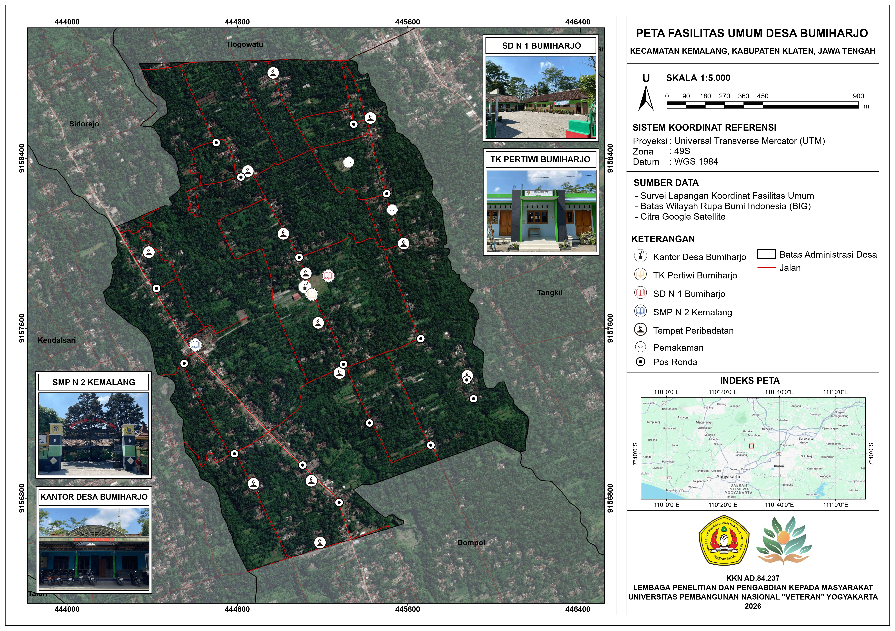
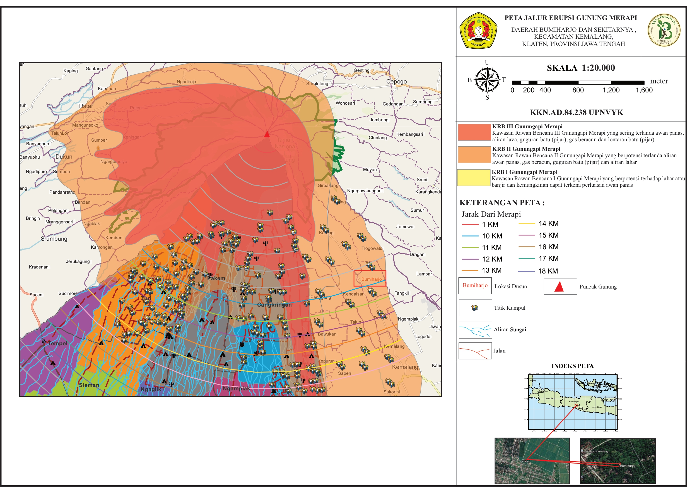
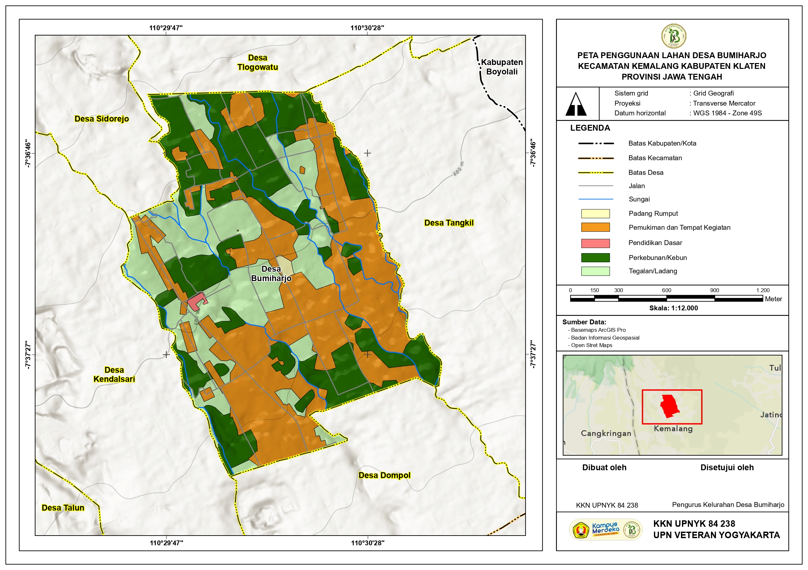

Peta Rawan Bencana
Informasi wilayah yang memiliki potensi risiko bencana
Peta Kawasan Rawan Bencana Longsor

Pemetaan tingkat kerawanan bencana longsor di kawasan Desa Bumiharjo dan sekitarnya.
Informasi spasial dan pemetaan Desa Bumiharjo
Lokasi Desa Bumiharjo pada Google Maps
Menampilkan sebaran fasilitas umum di Desa Bumiharjo

Pemetaan titik lokasi fasilitas umum seperti Kantor Desa, Sekolah, dan Tempat Peribadatan di kawasan Desa Bumiharjo.
Informasi wilayah yang memiliki potensi risiko bencana
Pemetaan tingkat kerawanan bencana longsor di kawasan Desa Bumiharjo dan sekitarnya.
Pemetaan kawasan rawan erupsi Gunung Merapi

Pemetaan Kawasan Rawan Bencana (KRB) I, II, dan III Gunungapi Merapi untuk Desa Bumiharjo dan sekitarnya.
Informasi distribusi tata guna lahan di wilayah desa

Pemetaan distribusi penggunaan lahan seperti pemukiman, perkebunan, tegalan, dan padang rumput di Desa Bumiharjo.
Berbatasan Dengan Desa Tlogowatu dan Sidorejo
Berbatasan Dengan Desa Dompol
Berbatasan Dengan Desa Tangkil
Berbatasan Dengan Desa Kendalsari